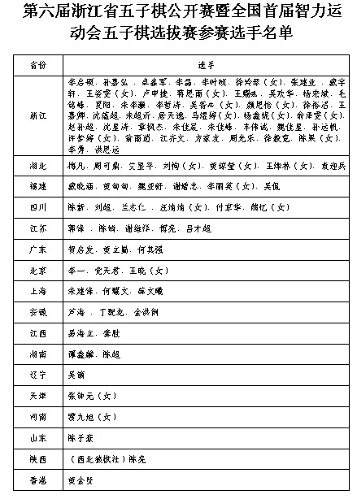

浙江省五子棋公开赛已报名名单（正式版）
#1 浙江省五子棋公开赛已报名名单（正式版） 作者：游戏人间 发表时间：2009-7-12 22:03:43

［ 潇洒 于 2009-7-12 22:24:13 时奖励此帖[金币加 20 威望加1］
#2 Re:浙江省五子棋公开赛已报名名单 作者：测试规则 发表时间：2009-7-12 22:21:32
很好，阵容挺强大的，仅次于全国赛了#3 Re:浙江省五子棋公开赛已报名名单 作者：潇洒 发表时间：2009-7-12 22:26:21
很热闹 啊，听说 清缘 也参加
#4 Re:浙江省五子棋公开赛已报名名单（13号20时更新） 作者：无尽 发表时间：2009-7-13 20:07:39
我更新了下，大鱼是按照户籍排的吧。
#5 Re:浙江省五子棋公开赛已报名名单（13号20时更新） 作者：weigui 发表时间：2009-7-13 20:33:40
无尽，大鱼的才是正确的名单，因为有的虽然前面报了但后面没时间来了，我重新调整了的，现在这个反而不正确了
#6 Re:浙江省五子棋公开赛已报名名单（13号20时更新） 作者：无尽 发表时间：2009-7-13 20:37:57
哦，怪不得少了几个人，我还对着空间增加呢 删掉我增加那几个了
删掉我增加那几个了
#7 Re:浙江省五子棋公开赛已报名名单（13号20时更新） 作者：weigui 发表时间：2009-7-13 20:47:15
我发份给你吧，这个也有遗漏#8 Re:浙江省五子棋公开赛已报名名单（13号20时更新） 作者：失落刀 发表时间：2009-7-14 9:07:21
浙江参赛选手好多呀！一是路途近，二是发展普及的好！
#9 Re:浙江省五子棋公开赛已报名名单（13号20时更新） 作者：潇洒 发表时间：2009-7-14 9:29:13
大鱼 是不是该拿一次冠军了 。。
#10 Re:浙江省五子棋公开赛已报名名单（13号20时更新） 作者：浩瀚铭剑 发表时间：2009-7-14 15:54:07
 提前祝四川棋手取得好成绩
提前祝四川棋手取得好成绩
#11 Re:浙江省五子棋公开赛已报名名单（13号20时更新） 作者：王小 发表时间：2009-7-15 9:59:48
本地豪强就占去大半，就像全团赛一样。
何时 外地的超过本地就好了 
#12 Re:浙江省五子棋公开赛已报名名单（13号20时更新） 作者：雨一直下 发表时间：2009-7-15 12:12:39
很好很强大的阵容,我认识的得奖了要打劫啊
#13 Re:浙江省五子棋公开赛已报名名单（13号20时更新） 作者：茗弈妙手 发表时间：2009-7-15 13:00:05
上班的朋友们是怎么请的假呢？本人很想学习一下
#14 Re:浙江省五子棋公开赛已报名名单（13号20时更新） 作者：点点 发表时间：2009-7-15 14:47:12
河南的碰碰又是单枪匹马去浙江，真是强大啊。
#15 Re:浙江省五子棋公开赛已报名名单（13号20时更新） 作者：王小 发表时间：2009-7-15 14:48:21
现在国家不是规定了7天+的年假的嘛。
如果，没有这个可以直接向领导说三。
如果不行就请事假，当然你也可以把自己的腿打断请病假。
实在不行，可以耍无赖，直接不去上班，最多走人三。
当然也有人平时送送礼，这个时候请假还不是小菜一碟。（平时的工作很总要，呵呵）
当然，如果你是公司的牛人可以威胁一下，但是这个是有风险的，
以后公司不把你当牛人了，你就是打击对象。
#16 Re:浙江省五子棋公开赛已报名名单（13号20时更新） 作者：梦婷 发表时间：2009-7-16 15:29:13
（西北狼棋社）陈亮 加油！汪清清四川的？ 搬家真快，也不请姐姐帮忙，妹妹加油！
#17 Re:浙江省五子棋公开赛已报名名单（正式版） 作者：无尽 发表时间：2009-7-16 21:08:27
更新最终版了。
#18 Re:浙江省五子棋公开赛已报名名单（正式版） 作者：团子亲卫队 发表时间：2009-7-17 10:19:25
浙江赛什么时候开始？#19 Re:浙江省五子棋公开赛已报名名单（正式版） 作者：潇洒 发表时间：2009-7-17 10:26:26
7月18号开始#20 Re:浙江省五子棋公开赛已报名名单（正式版） 作者：茗奕的飞猪 发表时间：2009-7-17 14:43:12
江齐文加油！！！！！！！！戴宇轩加油！！！！！！！！！！！！！#21 Re:浙江省五子棋公开赛已报名名单（正式版） 作者：牛牛 发表时间：2009-7-17 21:08:21
 我恨我自己不能去
我恨我自己不能去
#22 Re:浙江省五子棋公开赛已报名名单（正式版） 作者：松痕 发表时间：2009-7-17 22:01:22
王烨林怎么到了湖北了.